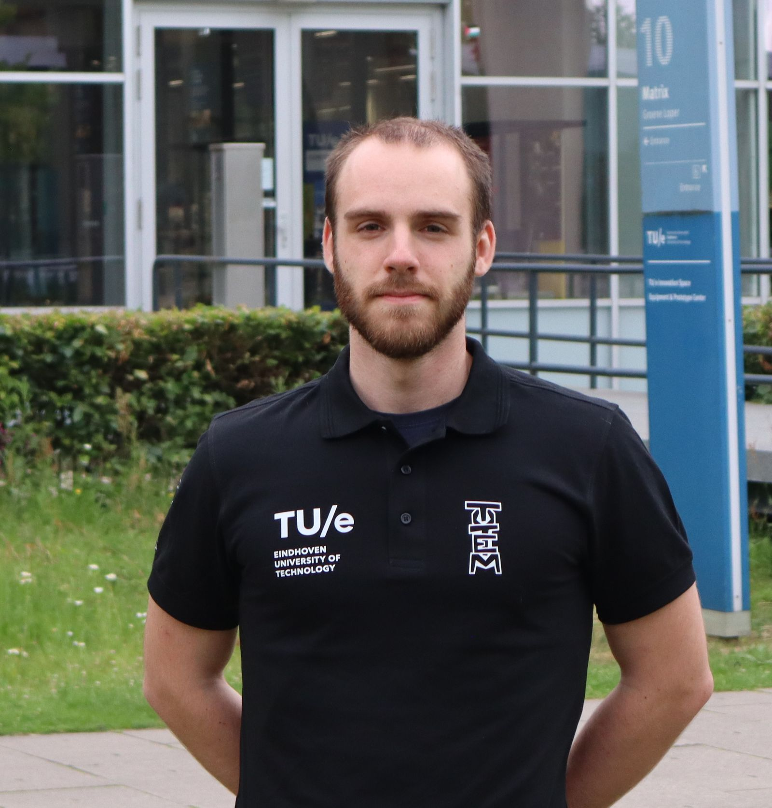
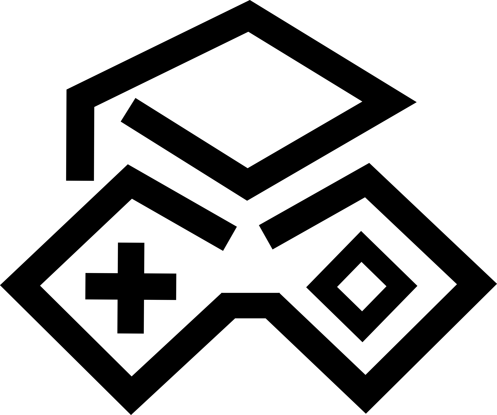
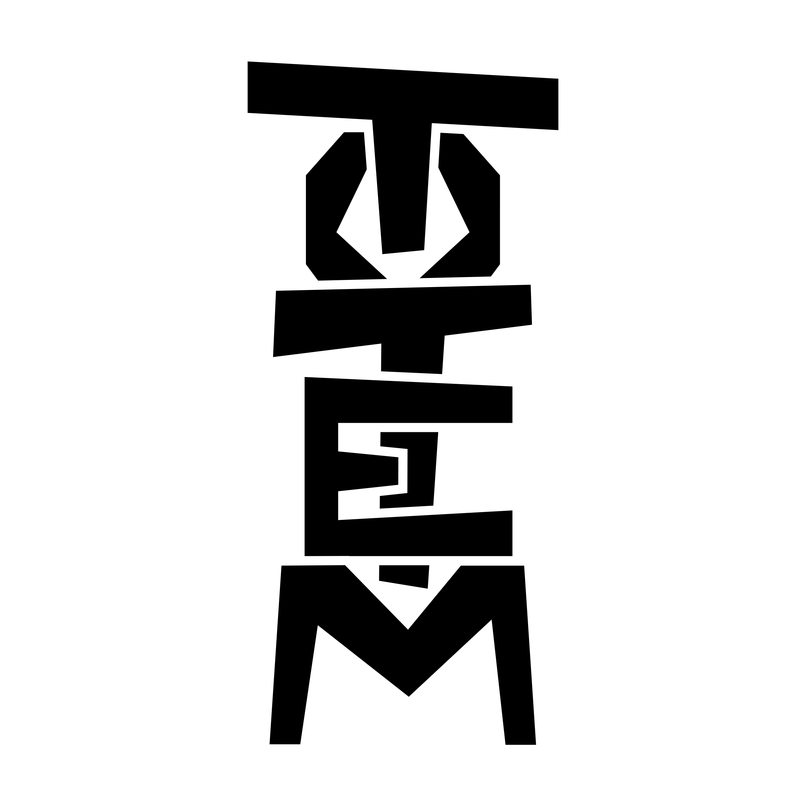
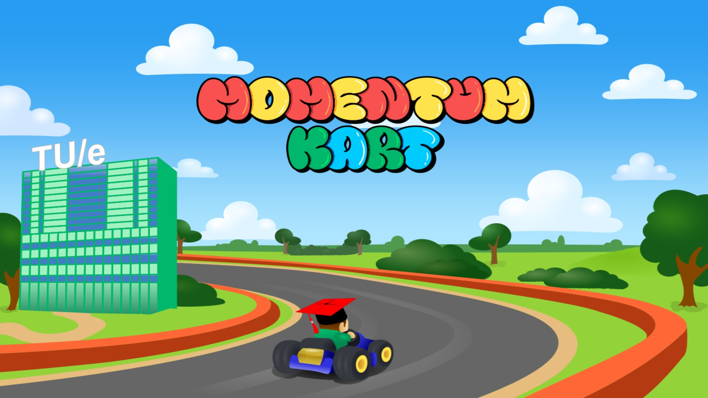

// PLAYER SELECT
_
I design and build gamified products end to end , from the concept to delivery. Currently running a gamification studio, leading a 40-person student team, and organizing an academic esports tournament.

Gamification Developer
// ABOUT
I'm a generalist by design , equally comfortable managing a dev team, designing an interface, writing code, or pitching a concept. That range comes from spending my studies at the intersection of human-technology interaction and game design, then spending four self-directed years leadding teams, managing finances, educating students, and networking.
I approach every project with a gamified but critical eye: user-centered, playful in execution, but held to the same bar as any serious product. Whether it's a rehab tool for children with cerebral palsy or an internal course for electrical engineers, the goal is the same , does it actually work for the person using it, and what do they gain from it?
Today that plays out across two roles: building client gamification products as CEO of UniGames B.V., leading 40+ people as Team Lead of Totem Game Dev
// CHOOSE YOUR BUILD
Four areas, one generalist. Select one to see how it plays out.
UX and interaction design, 3D and 2D art pipelines, rapid prototyping, and full visual identity work , from concept sketch to a shipped in-game asset.
Game development , tools programming, and the occasional hardware integration. I use C#, Python, and C in any project that needs it, and I'm integrating, merging, and overseeing codebases.
Team leadership, stakeholder relations, supervision and training, financial administration, and long-term business development. I've grown an organization from 6 to 50+ people, run the books, negotiated with external partners, and led development squads of up to 12 people through year-long production cycles.
Qualitative and quantitative methods applied to human-technology interaction , study design, participant testing, statistical analysis, and academic writing.
// THE DECK
Eight cards from the collection. Tap a card to flip it.
// EXPERIENCE LOG
Co-founded a five-person gamification studio spun off from Totem Game Dev. Business development and team management, plus hands-on design and software development for client products. Focused on developing educational games for higher education and supporting research projects.

Head of the 40+ person game-development student team at TU/e. Promoted to Team Lead after two years across four other roles, set up the team's bookkeeping, ran a 10-developer gamification squad, launched an internship program for MBO students, and helped lead the team to a 2nd-place finish at the Academic Esports World Tournament in Sydney.

Leading the organization of a 110+ person, 7-day competition, including 8+ international universities from around the world, competing in e-sports and academics. Funded and supported by external partners and hosted at TU/e.
Recreating the TU/e campus at 1:1 scale in Unity from point-cloud and satellite data for the AUDRI lab's autonomous-driving simulator, matching every lantern and stop sign to LiDAR data while keeping the model fully performant.
Continued development and led the research program for Mindful Waters, a digital aquarium for people with dementia, study design, testing, data analysis, and co-authoring a paper published in an international peer-reviewed journal.
Supported students through the theory and practice of game development, grading essays, prototypes, and final reports across the course series.
// GALLERY
Images on myself

// SAVE GAME
Open to gamification projects, collaborations, and interesting problems.